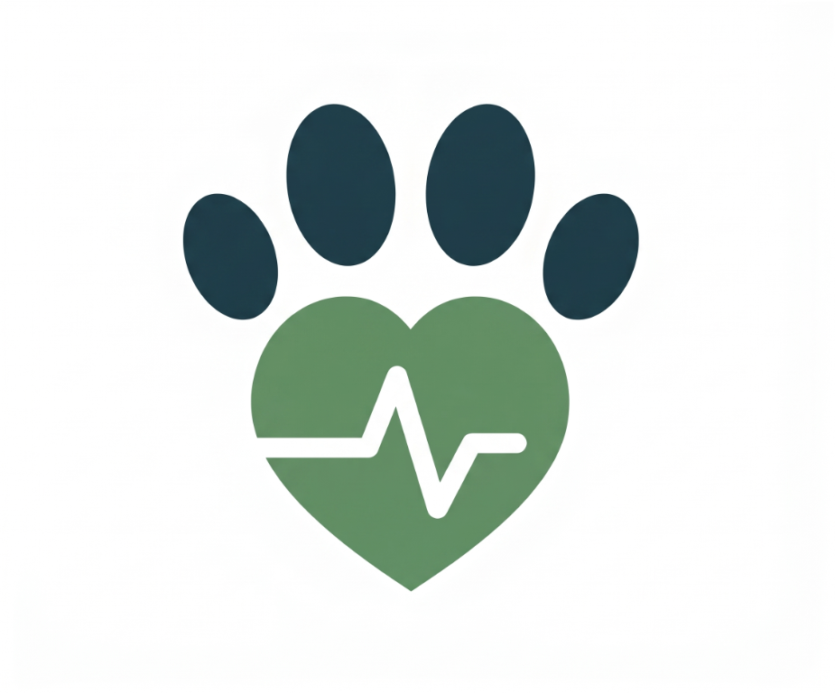

I Downloaded CoCo Desktop... Now What?
Welcome. As you settle in, keep these two links handy. We'll walk through the app using a fictional PawCore example.
From the blank screen to a first win.
CoCo is useful when you know where to work, what context to give it, and how to check what it produces.
Remove the guesswork
Understand how connections, projects, sessions, and files fit together.
Leave with a pattern
Ask a focused question, inspect the action, verify the evidence, and refine the answer.
Today is a presenter-led first look, not a room-wide install session.
See it once. Know where to start.
- 1Find CoCo Desktop and the CLI option; check the access you need.
- 2Tour the app: connections, Agent and Editor views, projects, sessions, and settings.
- 3Start a PawCore project and work through one small support question with a checked answer.
- 4Hear Zach English of OneSix share his CoCo use cases at the end.
- 5Bring your questions to the Q&A.
Where to go after today.
I Downloaded CoCo Desktop... Now What?
Part 1: get oriented and complete a first checked task.
Prompt to Pipeline
A separate, deeper data-engineering HOL with skills and plugins.
CoCo Desktop: Full Potential
Move from a first task to repeatable work and better context. Registration link to follow.
One CoCo. Three ways to work.
CoCo Desktop
A visual workspace for projects, conversations, and reviewing results.
Official downloads ↗CoCo CLI
Run CoCo in your terminal. Check account eligibility before installing.
CLI setup ↗CoCo in Snowsight
Use CoCo in the browser, inside the Snowflake web interface.
A standard Snowflake trial is not the dedicated CoCo CLI trial. Today's lab uses Desktop only.
What you need to follow along.
Desktop + sign-in
CoCo Desktop on macOS or Windows, plus your own Snowflake account, login, and approved sign-in method.
CoCo access
An active role with SNOWFLAKE.CORTEX_USER or SNOWFLAKE.CORTEX_AGENT_USER, and an available AI model.
Query access
A usable warehouse and permission to read PAWCORE_ANALYTICS.SUPPORT.SUPPORT_TICKETS. The GitHub repo does not grant Snowflake access.
Self-service trial? An account admin must add a credit card to enable AI features.

PawCore Systems is a fictional pet wellness technology company. Its IoT devices, like the SmartCollar, monitor pet health for customers in 15+ countries.
PawCore needs a support decision.
A SmartCollar V2 support lead asks: which region needs attention, and what evidence supports that call?
What we have
A small set of synthetic support tickets with region, priority, and status.
What we need
A short, evidence-backed readout of current workload and a sensible next check.
Ticket counts can show where to look. We will check the result before calling it an answer, and we will not infer root cause from counts alone.
Trust the process, verify the answer.
Start with scope
Use the right account, project, data, and permissions. Ask a clear question with relevant context.
Review before running
Keep approvals on. Check proposed SQL, tool actions, and file edits before accepting them.
Check the claim
Compare the answer with the actual result. Separate facts from guesses, then refine.
Ticket counts can show where to look. They cannot establish root cause on their own.
Let's dive in.
From first connection to a PawCore question: watch how the project, context, agent actions, and human review come together.
Presenter-led demo. We will pause on the proposed action and check the evidence together.
Connect. Ask. Inspect. Check. Refine.
Use your own authorized Snowflake access. Review setup scripts before running them, especially in a shared account.